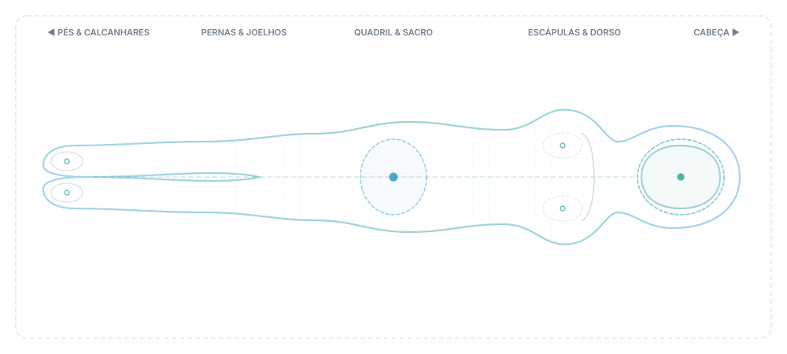

Peso Estimado
64.50
kg
Condição Postural
Decúbito Dorsal
Tempo na Condição
00:18:42
Status de Alerta
● Normal — Sem Risco LPP
Mapa de Pressão em Tempo Real
ORIENTAÇÃO: PÉS (ESQ) ➔ CABEÇA (DIR)

100%
0%
Evolução Clínica
4 Horas
GRÁFICOS DE EVOLUÇÃO
Evolução do Peso
64.5 kg
Índice Postural
Estável (0.04)
Tempo na Condição
18 min
Eventos Recentes
4 registros- 18:15 Calibração de tara confirmada pela equipe assistencial.
- 17:40 Mudança postural para Decúbito Dorsal detectada.
- 16:35 Alerta de tempo estático (60 min) atendido com sucesso.
- 15:30 Início da sessão de monitoramento contínuo Samel.
Resumo do Monitoramento
Turno Atual| Última Tara / Calibração | Hoje às 14:30 |
| Limite de Tempo Configurado | 60 min |
| Alterações Posturais Hoje | 7 rotações |
| Tempo Médio por Postura | 42 min |
| Score de Alívio de Pressão | 94% (Ótimo) |